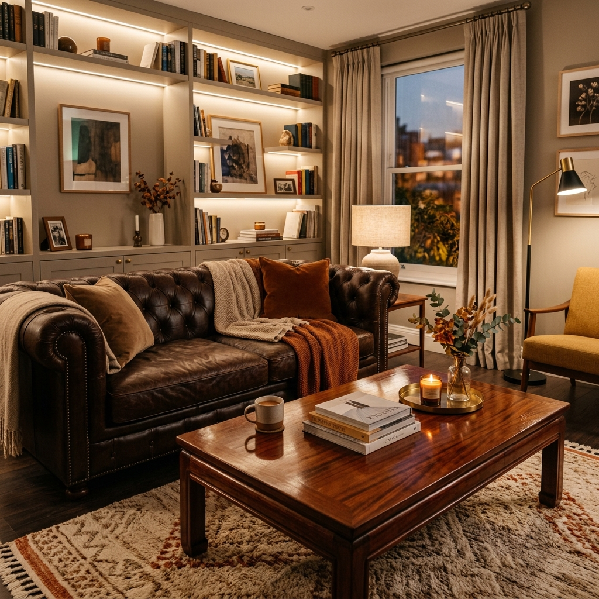
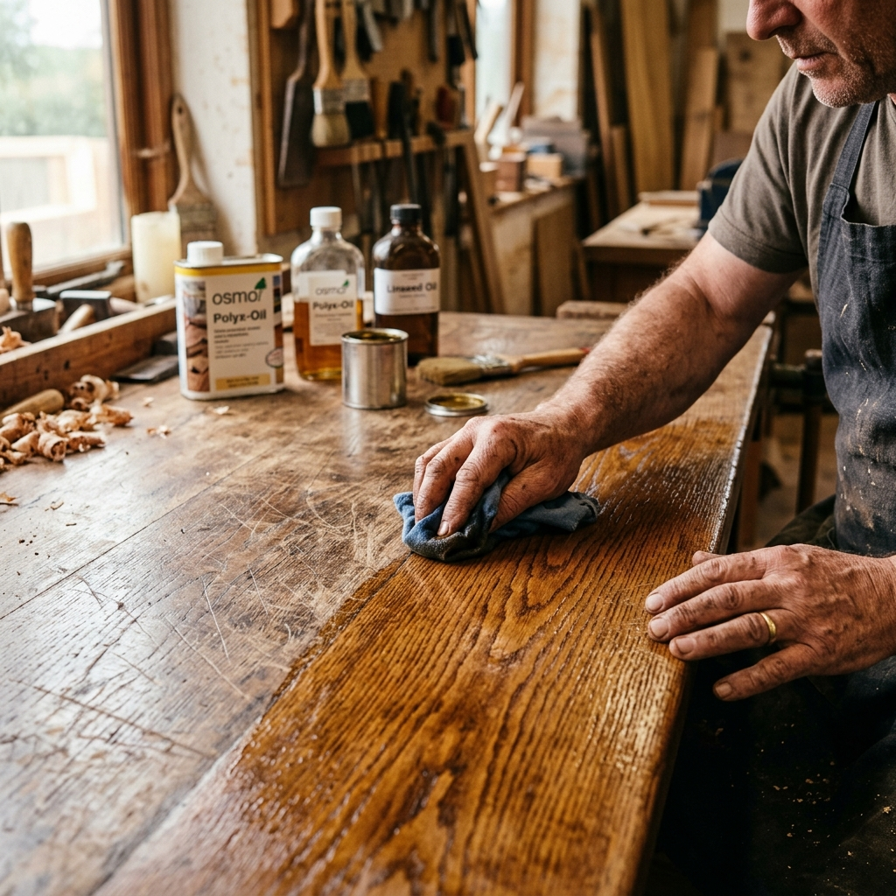
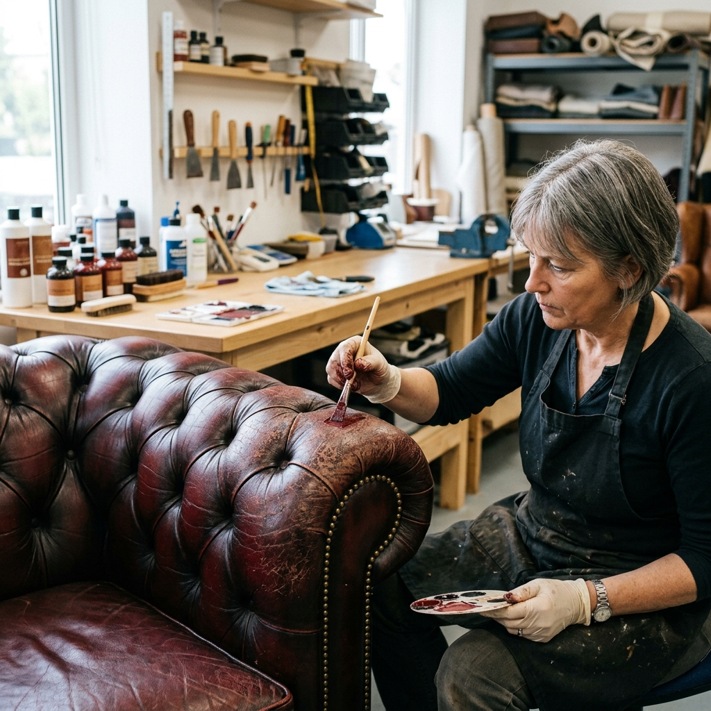
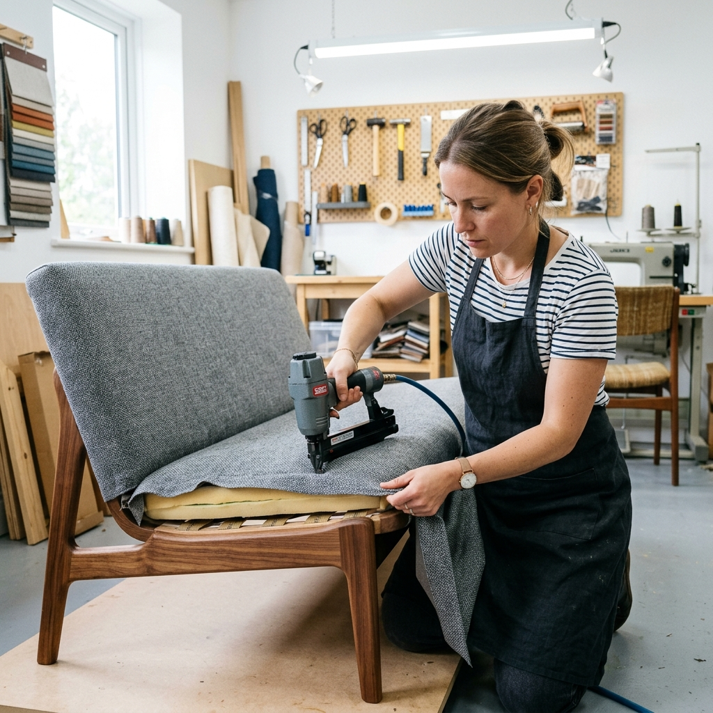

Premium mobile furniture repair and antique restoration serving home and commercial clients in Sunderland. Restoring tables, luxury sofas, and leather armchairs in Fulwell, Roker, and surrounding areas.
We offer a comprehensive range of furniture repair and carpentry services in Sunderland, covering:
✓ No call-out fee for Sunderland area.
Our expert technicians carry out high-quality repairs directly in your home. No need to transport heavy items; we do the hard work for you.

Complete repair of scratches, ring marks, and dents on dining tables, desks, and cabinet frames in Sunderland. French polishing and coloring matched to absolute precision.

Restoring worn out leather armchairs and suites across Sunderland. We patch tears, fix pet claws damage, replace faded color, and clean leather professionally.

Sagging seats? We replace worn webbing, saggy springs, and fill flat cushions with high-density foam, making your sofa firmer and more comfortable.
We have been serving Sunderland with premium cabinet repairs, polishing, and upholstery for over 15 years. Our mobile workshop travels directly to your home or office, resolving issues on-site.
Whether you have an antique writing bureau in Ashbrooke that needs joint stabilization, a scuffed leather chair in Roker, or flat sofa cushions in Fulwell, our local joiners and upholsterers deliver premium results.
Local to Sunderland, we can offer prompt quotes and booking times within 24-48 hours.
We use premium materials, original pig-skin fillers, and custom pigments for leather repair.
We take pride in providing a five-star local service. Hear from our clients in your neighborhood.
"Had our antique dining chairs re-glued and polished. The joints were loose and dangerous, but they are now solid as a rock. Excellent wood repair job here in Roker!"
"Unbelievable restoration on our scuffed leather armchair. The scratch is gone and the color matches perfectly. Highly recommended Sunderland upholstery service."
"Elite refilled our flat sofa cushions. It feels firmer and more comfortable than it did when we first bought it. Prompt and polite Sunderland team."
Ready to restore your furniture? Fill out the form, and our Sunderland team will get back to you with a free, custom quote. Alternatively, call us directly for immediate assistance.